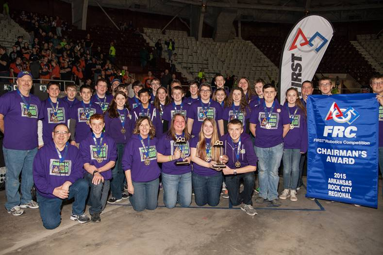

During the competition, you will be matched with at least one other judge to conduct team and student interviews in the Pits. The Pits are where the teams reside when their robots are not on the field of play. Although you will be called upon to offer your expertise and opinions during the deliberations for the awards, collaboration and consensus building are two highly desired traits of FIRST judges in the judges room.
